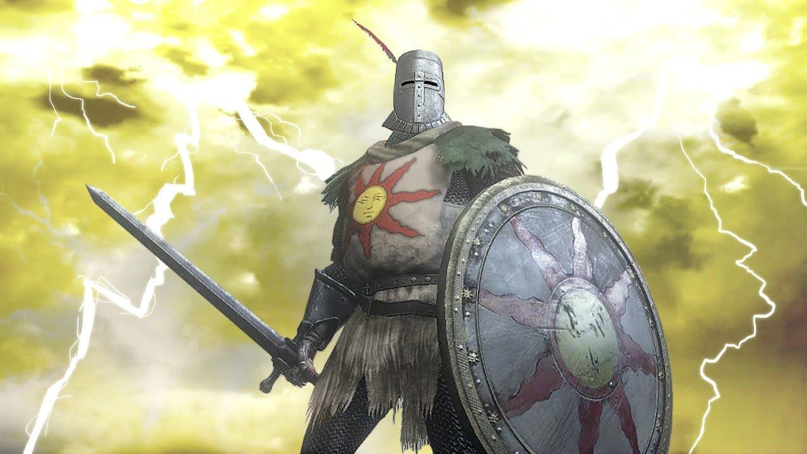
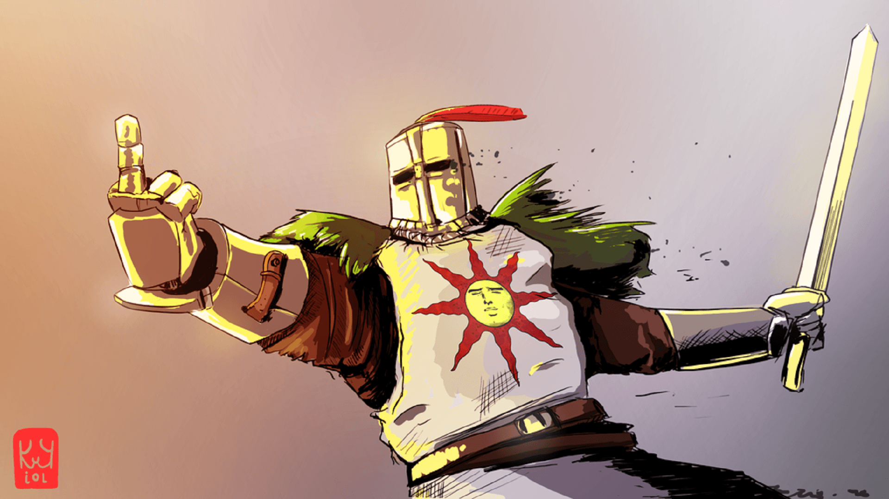
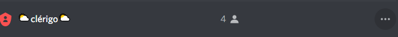

Historia da Seita Praise The Sun
Provavelmente você sabe de onde se originou esse termo "Praise The Sun"... mas se não eu irei lhe dizer!! Esse site foi feito por Jess com o intuito de lhe mostrar nossa brincadeira e caso você se interesse poderá saber aonde me procurar.
Criação
A 3 anos com relação a data de criação desse site 21/09/2021 eu começei a me interessar pelos action RPG, pesquisando encontrei Dark Souls, um jogo bastante hypado por sua dificuldade, um anos após isso consegui juntar um dinheiro e comprei o Game, joguei por muito tempo sendo claro esse fato por causa do tempo jogado do meu Save, que passava de 200h. No meio de muitas lore/historia de npcs acabei me esbarrando com o npc "Solaire" que possuia uma crença forte ao Sol, sendo mais importante do que tudo e todos, fiquei muito interessado sobre isso e sobre o personagem.
Acabei adotando o personagem como meu avatar.
O que Queremos
Nesse tempo em que estamos em pandemia o tedio sempre faz parte, criei essa seita para tentar mudar isso, uma brincadeira com amigos para passar o tempo
Para os Participantes temos o cargo Clérigo que é dado ao usuario pelo Discord no servidor 7sea.
Caso queira saber mais assista ao video logo abaixo:
Como participar?
Temos alguns requisitos antes que possa se juntar a nos: